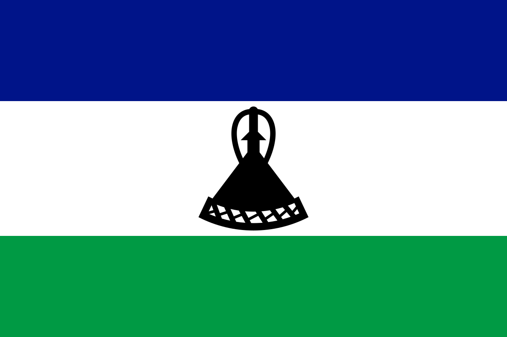

About Me
My name is Tlokotsi Foulo. I was born in Maseru, Lesotho and live with my family in Semonkong. I am currently only focused on studying with BYU-Idaho. I am unmarried and I live with my brother.
Semonkong, Lesotho
Lesotho, a high-altitude, landlocked kingdom encircled by South Africa, is crisscrossed by a network of rivers and mountain ranges including the 3,482m-high peak of Thabana Ntlenyana. On the Thaba Bosiu plateau, near Lesotho's capital, Maseru, are ruins dating from the 19th-century reign of King Moshoeshoe I.
